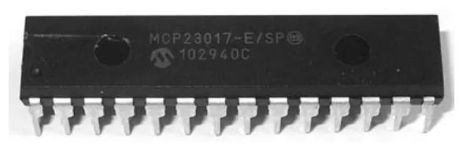
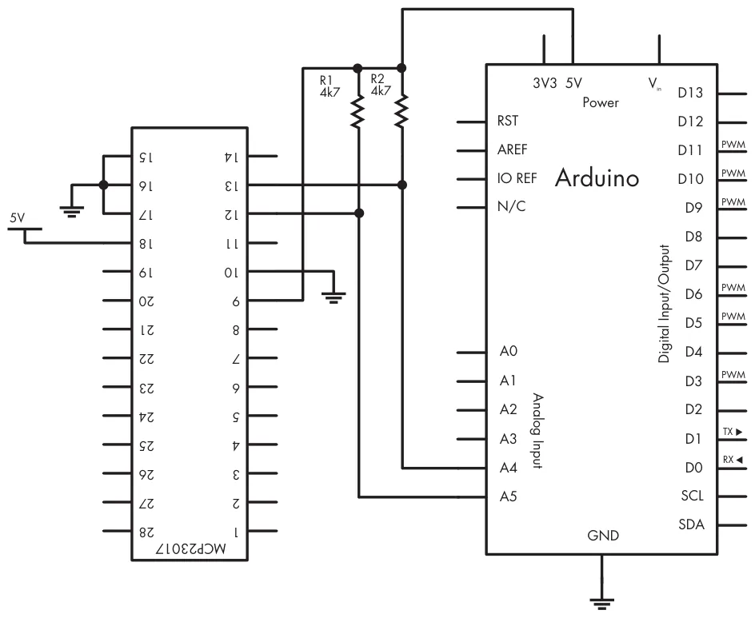
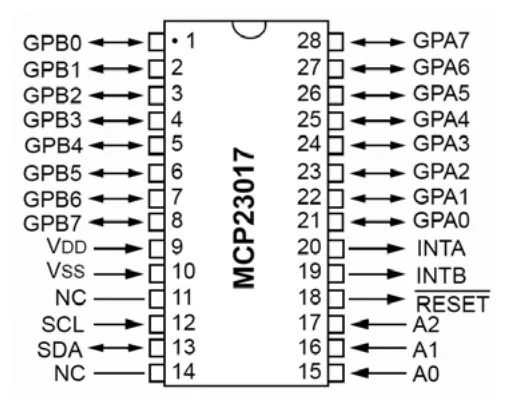

A port expander is another useful IC that is controlled via I2C. It’s designed to offer more digital outputs. In this project, we’ll use the Microchip Technology MCP23017 16-bit port expander IC (Figure 17-5), which has 16 digital outputs to add to your Arduino. It is available from retailers such as Newark (part number 31K2959) or element14 (part number 1332088).

In this project, we’ll connect the MCP23017 to an Arduino and demonstrate how to control the 16 port expander outputs with the Arduino. Each of the port expander’s outputs can be treated like a regular Arduino digital output.
The Hardware
Here’s what you’ll need to create this project:
- Arduino and USB cable
- One breadboard
- Various connecting wires
- One Microchip Technology MCP20317 port expander IC
- Two 4.7 kΩ resistors
- (Optional) An equal number of 560 Ω resistors and LEDs
The Schematic
Figure 17-6 shows the basic schematic for an MCP23017. As with the EEPROM from Project 54, we can set the I2C bus address by using a specific wiring order. With the MCP23017, we connected pins 15 through 17 to GND to set the address to 0x20.
When you’re working with the MCP23017, it helps to have the pin-out diagram from the IC’s data sheet, as shown in Figure 17-7. Note that the 16 outputs are divided into two banks: GPA7 through GPA0 on the right side and GPB0 through GPB7 on the left. We’ll connect LEDs via 560 Ω resistors from some or all of the outputs to demonstrate when the outputs are being activated.


The Sketch
Enter and upload the following sketch:
// Project 55 - Using a Port Expander IC
#include "Wire.h"
#define mcp23017 0x20
void setup()
{
Wire.begin(); // activate I2C bus
❶ // setup MCP23017
// set I/O pins to outputs
Wire.beginTransmission(mcp23017);
Wire.write(0x00); // IODIRA register
Wire.write(0x00); // set all of bank A to outputs
Wire.write(0x00); // set all of bank B to outputs
❷ Wire.endTransmission();
}
void loop()
{
Wire.beginTransmission(mcp23017);
Wire.write(0x12);
❸ Wire.write(255); // bank A
❹ Wire.write(255); // bank B
Wire.endTransmission();
delay(1000);
Wire.beginTransmission(mcp23017);
Wire.write(0x12);
Wire.write(0); // bank A
Wire.write(0); // bank B
Wire.endTransmission();
delay(1000);
}To use the MCP23017, we need the lines listed in void setup() from ❶ through ❷. To turn on and off the outputs on each bank, we send 1 byte representing each bank in order; that is, we send a value for bank GPA0 through GPA7 and then a value for GPB0 through GPB7.
When setting individual pins, you can think of each bank as a binary number (as explained in “A Quick Course in Binary” on page 116). Thus, to turn on pins 7 through 4, you would send the number 11110000 in binary (240 in decimal), inserted into the Wire.write() function shown at ❸ for bank GPA0 through GPA7 or ❹ for bank GPB0 through GPB7.
Hundreds of devices use the I2C bus for communication. Now that you know the basics of how to use these buses, you can use any of them with an Arduino board.